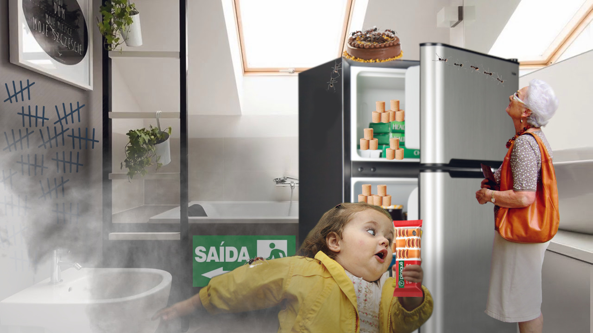

Ep01 • Histórias e afins
No primeiro epsodio do podcast nos contamos histórias engraçadas e tristes das nossas vidas.
30 minutos • 1 de setembro de 2020
No primeiro epsodio do podcast nos contamos histórias engraçadas e tristes das nossas vidas.
30 minutos • 1 de setembro de 2020